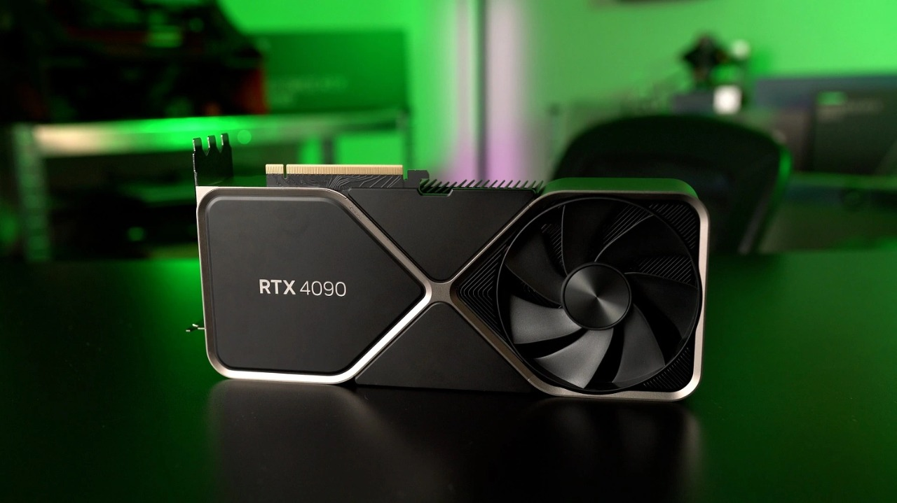
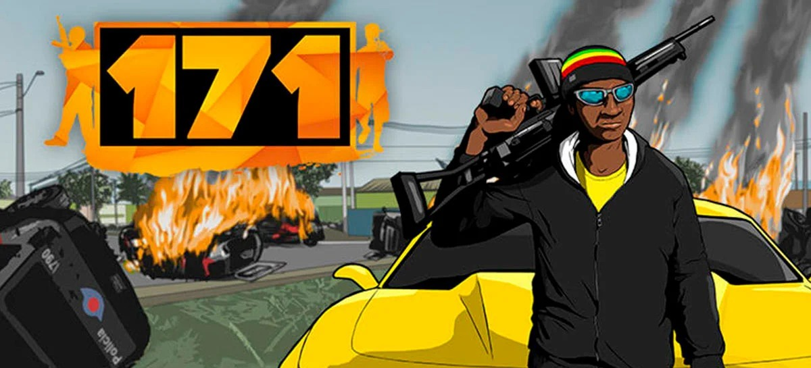

Novas placas de vídeo da série RTX 40 serão lançadas em setembro

Na segunda-feira, a NVIDIA anunciou a próxima edição do evento NVIDIA GTC, série de palestras sobre tecnologia que é realizada semestralmente. O CEO da empresa, Jensen Huang, disse em um dos comunicados a imprensa que a companhia tem "uma empolgante nova geração [de GPUs] chegando". Historicamente, a NVIDIA realiza eventos de produtos gamers e tech separadamente, mas a presença de Huang na GTA 2022 indica que ele apresentará a próxima geração de placas de vídeo da série RTX 40.
Lançamento do 171 confirmado para o dia 17 de Novembro

O jogo brasileiro 171 foi lançado hoje (17) em acesso antecipado e não demorou muito para alcançar a primeira posição entre os mais vendidos do Brasil na Steam. O game é desenvolvido pelo estúdio BetaGames Group e tem grandes inspirações nos jogos da série Grand Theft Auto. Para ficar em primeiro lugar, 171 desbancou grandes franquias como Call of Duty, FIFA e Marvel's Spider-Man.
Ele foi lançado na Steam custando R$ 59,99, mas os usuários podem adquirir o jogo até o dia 24 de novembro com 10% de desconto, saindo por apenas R$ 53,99. Com muitas referências ao Brasil e uma ambientação toda inspirada no Brasil, o jogo tem previsão de lançamento da versão final para 2024. O acesso antecipado servirá para que os jogadores ajudem no desenvolvimento dando feedback para os desenvolvedores.